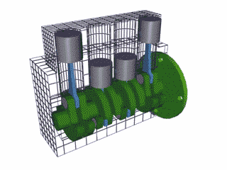

Atualmente temos 4 tipos de motores, Temos os motores em V, Motores em linha, Motores Wankel e os Motores Boxer
Os Motores em "V" são Motores construídos em "V", como o próprio nome já diz, os motores em "V" tem essa construção para reduzir o tamanho do motor, sendo assim podemos ter um motor com 8 cilíndros ocupando um espaço de um motor de 6 ou de 4 cilíndros. Esses motores costuman ser montados em carros esportivos e em carros caros pra caramba.
Obs: Exemplo de um motor construído em "V" contendo 8 cilíndros
Os Motores em Linha são motores construídos de uma maneira em que a disposição dos cilíndros sigam uma linha reta "------". Esses motores são mais comuns nos veículos, eles estão presente em 90% dos carros já que seu custo de construção e de manutençao é bem mais baixo em comparação com os outros motores.
Obs: Exemplo de um motor construído em Linha contendo 4 cílindros
Motores Boxer, são motores cuja construção é feita com os cilíndros opostos, ou seja, o motor trabalha "deitado". Esse motor é encontrado no nosso bom e velho Fusca e na Kombi, eles estão presentes também em alguns carros da Porsche e nos carros da Subaru.

Obs: Exemplo de um motor boxer contendo 4 cilíndros.
De todos os motores, os motores Wankel são os mais diferentes, eles não possuem uma construção baseada em pistões e bielas. Esse motor tem suas construção baseada em um triângulo meio arredondado conectado no eixo do virabrequim que gira em uma câmara ou em um cilíndro, esse "triângulo" faz todos os ciclos do motor, admissão, comprensão, explosão e exaustão, ele faz os 4 ciclos enquanto gira na câmara. Esse motor de todos é o que tem a construção mais simples e o que tem menos perda de potência, ele é pouco utilizável pelo fato de que as peças internas dele sofrem bastante desgaste fazendo com que o custo de manutenção seja um tanto quanto elevado.
Obs: Exemplo de um motor Wankel contendo 1 rotor
| Motor | Som | Motor V8-Mustang |
|---|---|
| Motor em Linha com 6 cilíndros-RB26 | |
| Motor Boxer-Subaru | |
| Motor Wankel-Mazda |